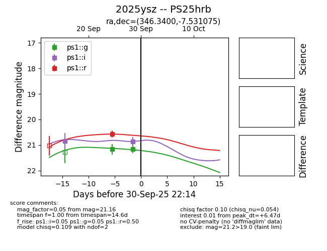
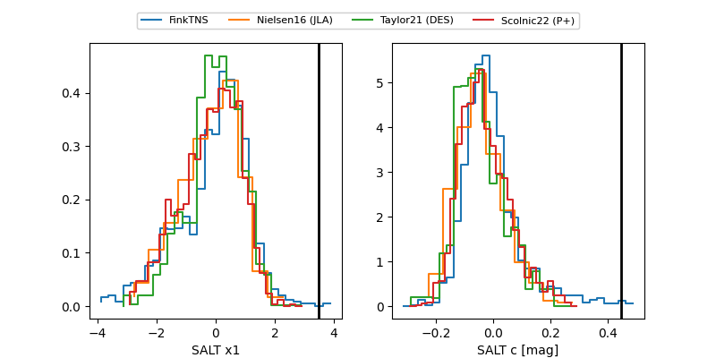

TNS: 2025ysz
YSE: 2025ysz
2025ysz (yse,tns)
PS25hrb (panstarrs)
equatorial (ra, dec) = (346.3400,-7.53108)
galactic (l, b) = (65.9667,-58.12909)


last ps1::g=21.16, ps1::i=20.86, ps1::r=20.57
2 ps1::g, 2 ps1::i, 1 ps1::r detections